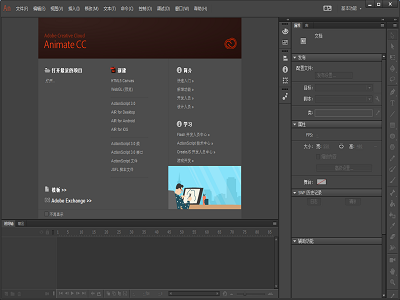
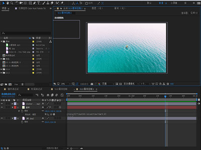
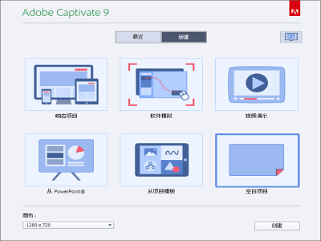
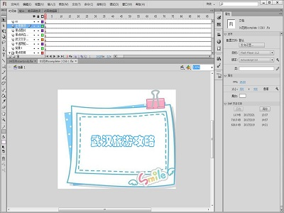
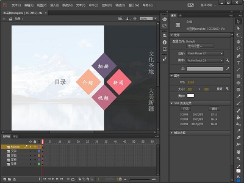
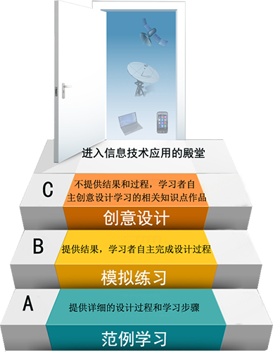

作品欣赏
PHOTOSHOP
简称“PS”，是由Adobe Systems开发和发行的图像处理软件。Photoshop主要处理以像素所构成的数字图像。使用其众多的编修与绘图工具，可以有效地进行图片编辑工作。ps有很多功能，在图像、图形、文字、视频、出版等各方面都有涉及。
AUDITION
Adobe Audition是一个专业音频编辑和混合环境，原名为Cool Edit Pro.。Audition专为在照相室、广播设备和后期制作设备方面工作的音频和视频专业人员设计，可提供先进的音频混合、编辑、控制和效果处理功能。

ANIMATE
Animate CC由原Adobe FlashProfessional CC更名得来，是一种动画制作软件，它维持原有Flash开发工具支持外新增HTML5创作工具，为网页开发者提供更适应现有网页应用的音频、图片、视频、动画等创作支持。
PREMIERE
Adobe Premiere是一款常用的视频编辑软件，由Adobe公司推出。它提供了采集、剪辑、调色、美化音频、字幕添加、输出、DVD刻录的一整套流程，且可以与Adobe公司推出的其他软件相互协作。目前这款软件广泛应用于广告制作和电视节目制作中。

AFTER EFFECT
Adobe公司推出的一款图形视频处理软件，是制作动态影像设计不可或缺的辅助工具，是视频后期合成处理的专业非线性编辑软件。应用范围广泛，涵盖影片、电影、广告、多媒体以及网页等，时下最流行的一些电脑游戏，很多都使用它进行合成制作。
DREAMWEAVER
简称“DW”，中文名称为“梦想编织者”，是集网页制作和管理网站于一身的所见即所得网页代码编辑器。利用对HTML、CSS、JavaScript等内容的支持，设计师和程序员可以利用它可以轻而易举地制作出跨越平台限制和跨越浏览器限制的充满动感的网页。

CAPTIVATE
一款屏幕录制软件, 通过使用软件的简单的点击用户界面和自动化功能，学习软件的专业人员、教育工作者和商业与企用用户可以轻松记录屏幕操作、添加电子学习交互、创建具有反馈选项的复杂分支场景，并包含丰富的媒体。

FLASH CS6
Adobe Flash CS6是用于创建动画和多媒体内容的强大的创作平台。内含强大的工具集，具有排版精确、版面保真和丰富的动画编辑功能，在多种设备中如台式计算机和平板电脑、智能手机和电视等，都能呈现一致效果的互动体验。

FLASH CC
Adobe Flash CC是Adobe公司发布的一个专业的flash动画制作软件，界面清新简洁友好，它可以实现多种动画特效，是由一帧帧的静态图片在短时间内连续播放而造成的视觉效果，表现为动态过程，能满足用户的制作需要。
学习方法

三步教学法
本书创作原则采用“阶梯案例三步教学法”，是作者在几十年教学生涯中从实践到理论的结晶。图片所示的是该教学方法的图示模型。第一步：精细训练，每个知识单元设计一个到几个经典案例，进行手把手范例教学，按照教材的提示，由教师指导，学生自主完成。学生也可登录课程网站，参照案例视频讲解，一步步训练。 第二步：模拟训练，每一个知识单元提供一到多个模拟练习作品，只提供最后结果，不提供过程，学生使用提供的素材，制作出同样原理的作品。 第三步：创意练习训练，运用知识单元学习到的技能，自己设计制作一个包含章节知识点的作品。